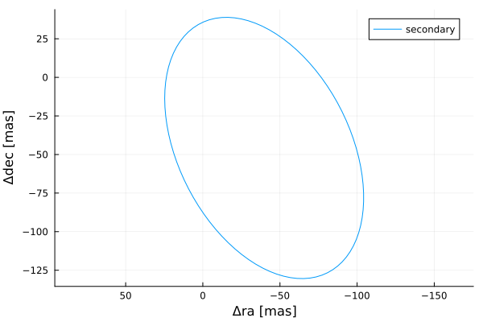
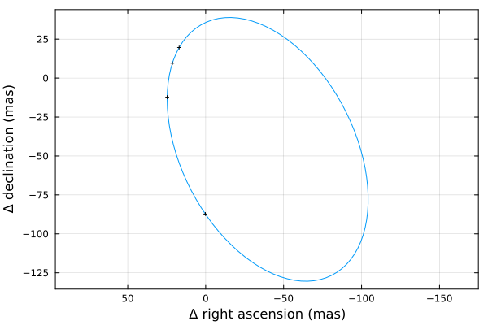
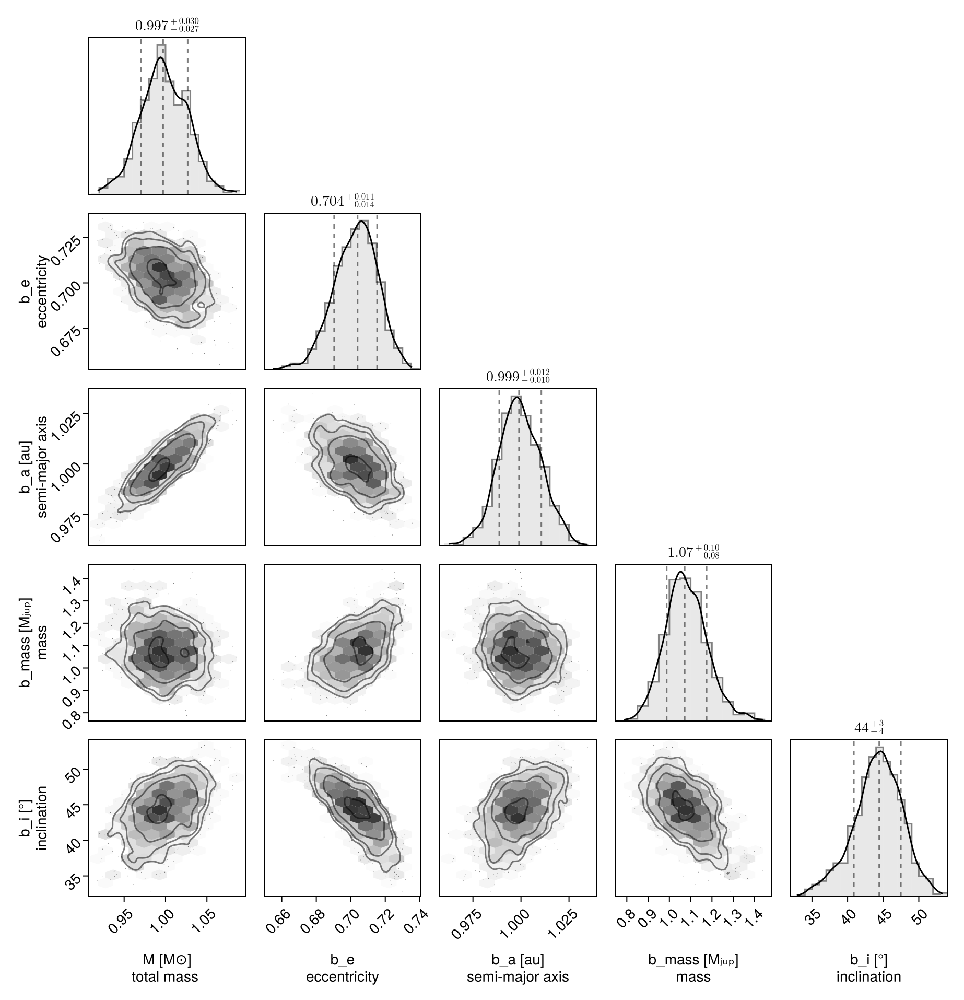

Fit Radial Velocity and Astrometry
You can use Octofitter to jointly fit relative astrometry data and radial velocity data. Below is an example. For more information on these functions, see previous guides.
Import required packages
using Octofitter
using OctofitterRadialVelocity
using CairoMakie
using PairPlots
using Distributions
using Plots:Plots
using PlanetOrbitsWe now use PlanetOrbits.jl to create sample data. We start with a template orbit and record it's positon and velocity at a few epochs.
orb_template = orbit(
a = 1.0,
e = 0.7,
i= pi/4,
Ω = 0.1,
ω = 1π/4,
M = 1.0,
plx=100.0,
m =0,
tp =58849
)
Plots.plot(orb_template)
Sample position and store as relative astrometry measurements:
epochs = [58849,58852,58858,58890]
astrom = PlanetRelAstromLikelihood(Table(
epoch=epochs,
ra=raoff.(orb_template, epochs),
dec=decoff.(orb_template, epochs),
σ_ra=fill(1.0, size(epochs)),
σ_dec=fill(1.0, size(epochs)),
))PlanetRelAstromLikelihood Table with 5 columns and 4 rows:
epoch ra dec σ_ra σ_dec
┌───────────────────────────────────────
1 │ 58849 17.0428 19.6097 1.0 1.0
2 │ 58852 21.3842 9.55631 1.0 1.0
3 │ 58858 24.6966 -12.2283 1.0 1.0
4 │ 58890 0.213769 -87.2649 1.0 1.0And plot our simulated astrometry measurments:
Plots.plot(orb_template, aspectratio=1, lw=1, label="")
Plots.plot!(astrom, aspectratio=1, framestyle=:box)
Generate a simulated RV curve from the same orbit:
using Random
Random.seed!(1)
epochs = 58849 .+ (20:20:660)
planet_sim_mass = 0.001 # solar masses here
rvlike = StarAbsoluteRVLikelihood(Table(
epoch=epochs,
rv=radvel.(orb_template, epochs, planet_sim_mass) .+ randn.() .+ 100randn(),
σ_rv=fill(5.0, size(epochs)),
inst_idx=ones(Int64, size(epochs)),
))
Plots.plot(rvlike, framestyle=:box)Now specify model and fit it:
@planet b Visual{KepOrbit} begin
e ~ Uniform(0,0.999999)
a ~ truncated(Normal(1, 1),lower=0)
mass ~ truncated(Normal(1, 1), lower=0)
i ~ Sine()
Ω ~ UniformCircular()
ω ~ UniformCircular()
θ ~ UniformCircular()
tp = θ_at_epoch_to_tperi(system,b,58849.0) # reference epoch for θ. Choose an MJD date near your data.
end astrom
@system test begin
M ~ truncated(Normal(1, 0.04),lower=0) # (Baines & Armstrong 2011).
plx = 100.0
jitter_1 ~ truncated(Normal(0,10),lower=0)
rv0_1 ~ Normal(0,10)
end rvlike b
model = Octofitter.LogDensityModel(test; autodiff=:ForwardDiff,verbosity=4)
using Random
rng = Xoshiro(0) # seed the random number generator for reproducible results
results = octofit(rng, model)Chains MCMC chain (1000×31×1 Array{Float64, 3}):
Iterations = 1:1:1000
Number of chains = 1
Samples per chain = 1000
Wall duration = 5.15 seconds
Compute duration = 5.15 seconds
parameters = M, jitter_1, rv0_1, plx, b_e, b_a, b_mass, b_i, b_Ωy, b_Ωx, b_ωy, b_ωx, b_θy, b_θx, b_Ω, b_ω, b_θ, b_tp
internals = n_steps, is_accept, acceptance_rate, hamiltonian_energy, hamiltonian_energy_error, max_hamiltonian_energy_error, tree_depth, numerical_error, step_size, nom_step_size, is_adapt, loglike, logpost, tree_depth, numerical_error
Summary Statistics
parameters mean std mcse ess_bulk ess_tail rha ⋯
Symbol Float64 Float64 Float64 Float64 Float64 Float6 ⋯
M 0.9981 0.0282 0.0009 997.5207 654.4965 1.000 ⋯
jitter_1 0.7646 0.6092 0.0203 694.0787 341.5338 1.000 ⋯
rv0_1 6.7150 0.9449 0.0298 999.9091 715.2958 0.999 ⋯
plx 100.0000 0.0000 NaN NaN NaN Na ⋯
b_e 0.7028 0.0126 0.0005 625.0159 452.4845 1.001 ⋯
b_a 0.9994 0.0110 0.0004 880.8351 690.8798 0.999 ⋯
b_mass 1.0796 0.0985 0.0045 504.3115 403.7274 0.999 ⋯
b_i 0.7715 0.0598 0.0027 510.5406 546.7528 0.999 ⋯
b_Ωy 0.9951 0.0985 0.0033 943.4135 580.3024 1.001 ⋯
b_Ωx 0.1045 0.0530 0.0020 690.7528 734.5371 0.999 ⋯
b_ωy 0.7123 0.0918 0.0030 929.4787 614.8753 1.003 ⋯
b_ωx 0.6977 0.0951 0.0042 535.4695 410.0273 0.999 ⋯
b_θy 0.7584 0.0797 0.0026 959.3856 742.0334 1.000 ⋯
b_θx 0.6547 0.0699 0.0022 1023.3964 720.1504 1.000 ⋯
b_Ω 0.1046 0.0519 0.0019 715.7938 670.2794 1.000 ⋯
b_ω 0.7747 0.0882 0.0034 659.2259 567.3667 1.001 ⋯
b_θ 0.7122 0.0302 0.0010 849.9777 754.2835 1.002 ⋯
b_tp 58652.9669 182.1944 6.8625 735.7476 881.3880 1.000 ⋯
2 columns omitted
Quantiles
parameters 2.5% 25.0% 50.0% 75.0% 97.5%
Symbol Float64 Float64 Float64 Float64 Float64
M 0.9402 0.9793 0.9971 1.0184 1.0520
jitter_1 0.0226 0.3111 0.6285 1.0787 2.2886
rv0_1 4.8896 6.0500 6.7378 7.3272 8.5260
plx 100.0000 100.0000 100.0000 100.0000 100.0000
b_e 0.6776 0.6947 0.7039 0.7116 0.7256
b_a 0.9773 0.9920 0.9990 1.0072 1.0214
b_mass 0.9000 1.0131 1.0720 1.1413 1.2853
b_i 0.6403 0.7359 0.7757 0.8131 0.8843
b_Ωy 0.8144 0.9243 0.9906 1.0644 1.1924
b_Ωx 0.0034 0.0688 0.1038 0.1380 0.2124
b_ωy 0.5433 0.6527 0.7037 0.7718 0.8990
b_ωx 0.5216 0.6300 0.6936 0.7633 0.8897
b_θy 0.6079 0.7015 0.7565 0.8121 0.9140
b_θx 0.5248 0.6049 0.6537 0.7008 0.7982
b_Ω 0.0038 0.0691 0.1045 0.1383 0.2109
b_ω 0.5946 0.7152 0.7772 0.8324 0.9452
b_θ 0.6505 0.6913 0.7137 0.7321 0.7701
b_tp 58478.8643 58483.2936 58488.1210 58848.7243 58848.9731
Display results as a corner plot:
octocorner(model, results, small=true)
Plot RV curve, phase folded curve, and binned residuals:
OctofitterRadialVelocity.rvpostplot(model, results,)Display RV, PMA, astrometry, relative separation, position angle, and 3D projected views:
octoplot(model, results)